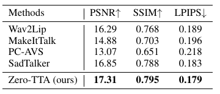
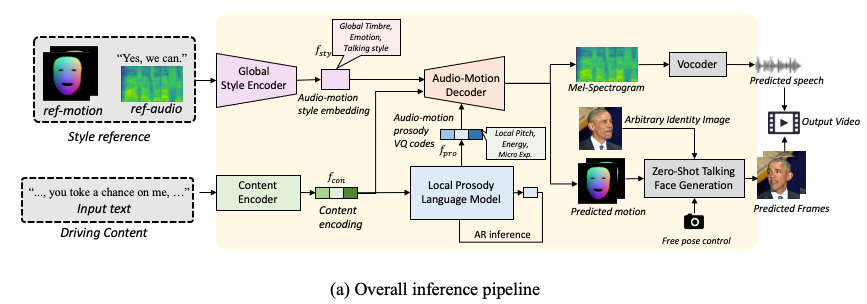

The PSNR/SSIM/LPIPS metrics of all methods. We can see that Zero-TTA achieves the best image quality.

Text-to-talking avatar generation could transform the plain text content into a vivid talking person video, which has broad prospects in real-world applications such as audio-visual chatbot. The existing methods typically use a cascading framework to generate the speech and facial expression, which results in degraded performance and system redundancy. Besides, the existing systems are typically limited to several seen identities during training, which requires expensive fine-tuning to adapt to a unseen identity. To this end, we propose Zero-TTA, the first end-to-end and zero-shot text-to-avatar synthesizer. Given a few-second-long video of an identity as the style prompt and arbitrary texts as the only driving input, without any adaptation, we aim to synthesize audio-visual-synchornized talking person videos with high identity similarity in terms of synthesized audio and video frames. Generally, we devise an auto-encoder framework that learns to encode and reconstruct the audio-motion pairs of arbitrary identity given the text content and several style attributes. Specifically, we train two style encoders to model the global style attributes (such as timbre and talking style) and the local style attributes (such as pitch and tiny expression). With the help of local/global style information and the text content, the decoder could predict synchronized audio-motion pairs with high coherence to the target identity. We also propose a local prosody langugae model to obtain the local style encoding during inference, which is modeled as vector-quantized code sequence. With these designs, our method becomes the first end-to-end and zero-shot text-to-avatar system. Experiments demonstrate that our method could synthesize realistic, style-preserving, and audio-visual synchronized talking avatar videos.
The overall inference process of Zero-TTA is demonstrated as follows:

Audio results produced by Zero-TTA and other state-of-the-art text-to-speech baselines.
| GT | Zero-TTA (Ours) | FastSpeech 2 | PortaSpeech |
|---|---|---|---|
| GT | Zero-TTA (Ours) | FastSpeech 2 | PortaSpeech |
|---|---|---|---|
Video results produced by Zero-TTA and other state-of-the-art audio-driven talking face generation baselines. The driving audio for all audio-driven methods are generated by our Zero-TTA given the GT audio as style prompt. And the facial motion are predicted by each audio-driven method given the driving audio.
| Ground Truth | Source | Zero-TTA (Ours) | PC-AVS |
|---|---|---|---|
| Wav2Lip | MakeItTalk | SadTalker | |
| GT | Source | Zero-TTA (Ours) | PC-AVS |
|---|---|---|---|
| Wav2Lip | MakeItTalk | SadTalker | |